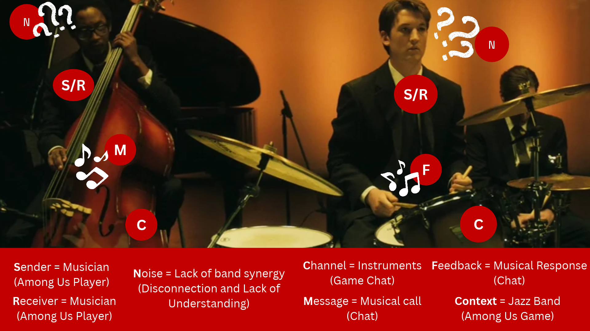

The model uses a jazz band as an analogy for the communication of players in Among Us. Each player is represented by a jazz musician trying to riff off of each other. They use their instruments as a channel to send their message being either a call or response. This shows how Among Us players respond to each other's callouts and accusations. Since the musicians don't always know what the other musicians will play, there needs to be good band synergy and confusion becomes noise when sending their feedback melody. The noise would be equivalent to players having to assess whether or not the messages are truthful or if they are being deceived. A musician also losing the melody would be a player suddenly disconnecting from the game. Overall, the model shows how players continuously send, receive, interpret, and respond to messages in order to properly communicate and hopefully reach that jazzy melody by winning the game.